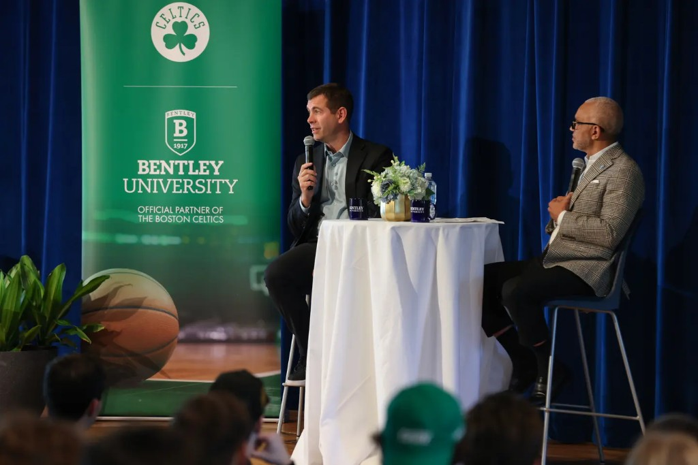
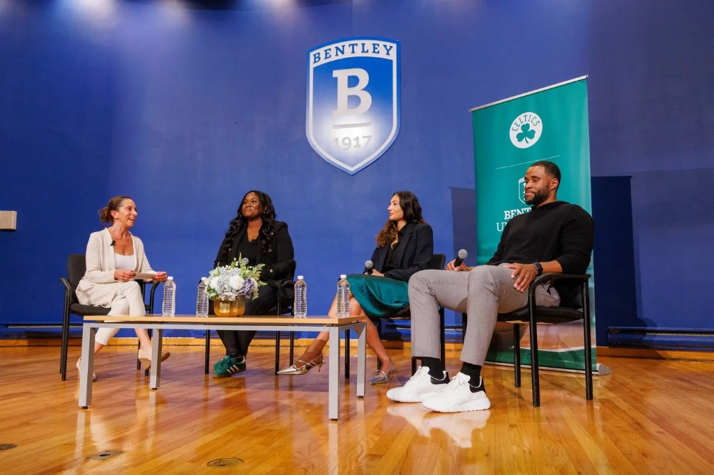
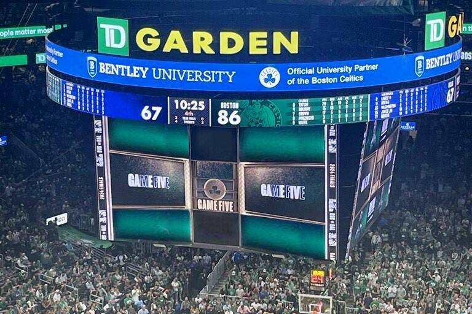
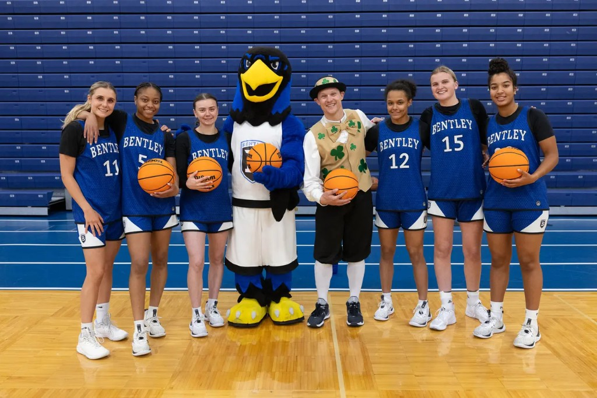
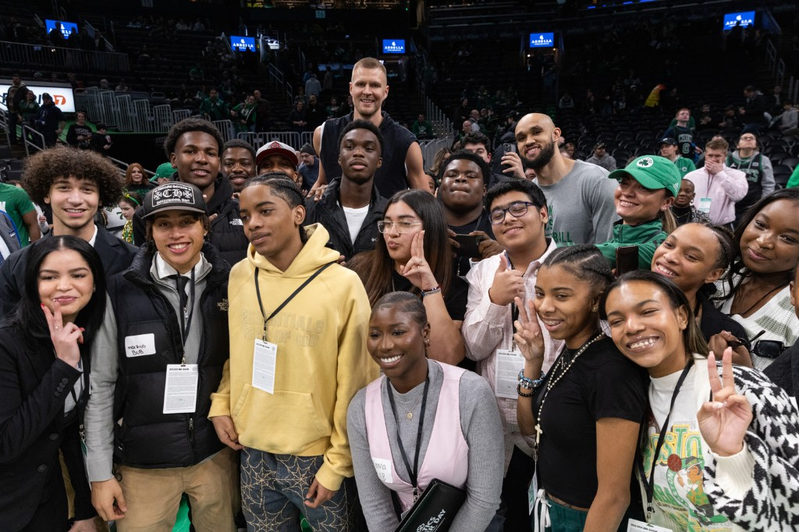

Boston Celtics experience
Fieldwork in experience design: what coordinating a university partnership and attending live events taught me about service touchpoints, crowd flow, and how large organizations translate strategy into memory.
Overview

During my time in Boston, I’ve been able to experience the Boston Celtics up close at TD Garden and on campus through Bentley’s partnership with the team. The Celtics – along with the Boston Bruins – call TD Garden home, and being in the arena has been a way to connect with the city’s culture, community, and energy. At the same time, on-campus events with Celtics leaders have given me a behind-the-scenes look at how strategy, analytics, and community impact show up in the business of sports. I approached each game and campus event as informal fieldwork — paying attention to the designed moments and the unplanned ones.
My role & what I did


My role focused on the Bentley side of Bentley University’s first-year partnership with the Boston Celtics. Because it was the inaugural year, many teams were still exploring what the collaboration could become and what kinds of experiences we could create for students. I primarily worked with staff and student groups at Bentley, while occasionally coordinating with members of the Celtics organization.
Much of my work involved ideating and executing initiatives that supported the partnership. Once ideas were approved, I helped bring them to life through planning, communication, and on-site coordination.
One project I am especially proud of was part of the President’s Speaker Series, where E. LaBrent Chrite sat down in conversation with Brad Stevens in Bentley’s Koumantzelis Auditorium. The event filled every seat with students, faculty, and staff. I coordinated the distribution of partnership shirts and managed several logistics leading up to the event. Seeing people across campus wearing those shirts afterward was incredibly rewarding because it showed that the partnership was becoming visible and meaningful to the Bentley community.
Outside of event coordination, I also used the partnership as a learning opportunity. While attending games at TD Garden, I paid attention to how fans move through the arena, from security and ticketing to in-arena prompts, merchandise, concessions, and entertainment. I often brought these observations back into class discussions about experience design, community engagement, and how large organizations translate strategy into real experiences for people.
Outcomes & takeaways

From a UX and strategy lens, the Celtics experience reinforced how important it is to design for the full journey – not just what happens “on the court.” I became more intentional about looking for service touchpoints (wayfinding, signage, staff interactions), emotional peaks (player intros, big plays, community moments), and operational constraints (security, crowd flow, accessibility) that shape how people remember an event.

Seeing how the partnership showed up in campus life – from joint moments with Bentley athletics to community events – also reminded me that strong experiences are built across many small, coordinated touchpoints, not just one big campaign.

Career-focused events at TD Garden brought everything together: students on the court, hearing directly from staff about analytics, marketing, and community programs. Those moments made the partnership feel tangible and gave me concrete examples I now reference in my own projects.